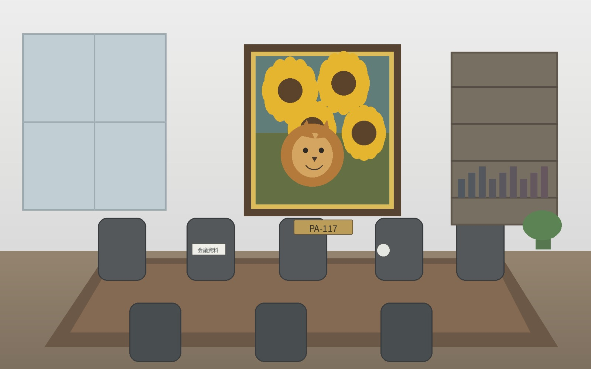

怪盗事件を追う人たち――特別捜査本部の1日に密着！
怪盗関連事件特別捜査本部では、現場捜査だけでなく、過去記録の照合、予告状の分析、被害者との連絡、情報システムの維持など、さまざまな担当者が連携して業務を行っています。今回は、普段あまり見る機会のない本部の1日を紹介します。
9:00 朝の情報共有
前日からの継続案件、新たな情報提供、各担当班の予定を確認します。未解決事件については、数年前の記録を改めて照合することもあります。

写真奥に見えるのは、大きなひまわりとライオンを描いた一点物の作品。来庁者から「印象に残る」と声をかけられることも多いそうです。
13:00 記録と現場情報の照合
事件名や怪盗名だけでなく、残された文言、使用された道具、時間帯、被害品の特徴などを横断して確認します。同じ怪盗が関与しているように見えても、実際には別事件だったというケースもあります。
17:30 記録整理
その日の捜査結果や照会内容を記録し、必要な資料を事件データベースへ反映します。正確な記録の積み重ねが、次の事件解決につながります。